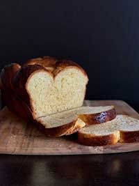

Egg-cellent Bread!!!!! Very yummy. Makes two loaves.
1/2 cup warm water
2 tsp. granulated sugar
1/2 oz. active dry yeast (2 packets)
1 cup milk
1/4 cup butter or non-dairy alternative
1/3 cup granulated sugar
2 tsp. salt
2 large eggs, beaten
6 1/2 all-purpose flour
1 Tbsp. butter or non-dairy alternative, for brushing
Combine warm water, sugar, and active dry yeast in a small bowl. Set aside for ten minutes.
Scald milk in saucepan over medium-high heat.
In a separate bowl, combine butter, sugar and salt in a large bowl. Pour the scaled milk on top and stir to dissolve. Next, stir in the yeast mixture.
Beat two eggs and add them to the mixture.
Work flour in to mixture until the dough pulls away from the sides of the bowl. Grease a separate large bowl, place dough in, cover with tea towel, and let stand for 1 to 1 1/2 hours until doubled.
After rising, punch dough down and divided in half. Take each half and further split to into 3 peices each (six dough balls total).
roll each dough peice into 20 inch (50 cm) ropes.
Take three dough ropes and pinch three ends together.
place the pinched dough on a greased baking sheet and braid the dough ropes.
Repeat steps 8-9 with remaining three dough ropes.
cover dough braids with tea towel and let stand for around 45 minutes. Pre-heat oven to 375℉ (190℃).
Bake for 30 minutes and place on racks to cool when done. Brush warm braids with butter.